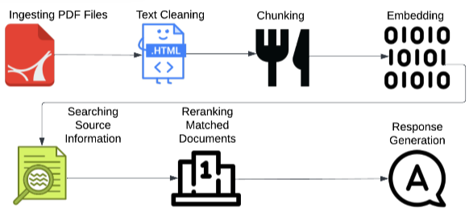
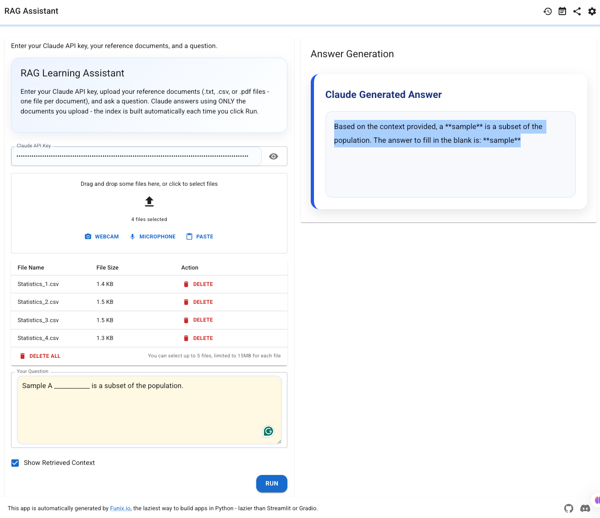
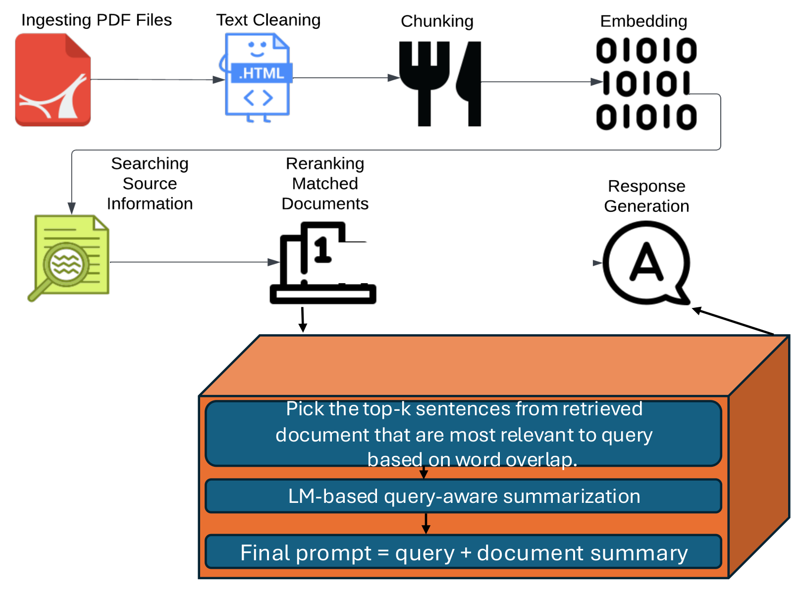
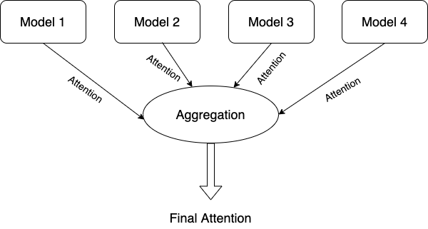

Open to Summer 2027 ML / NLP internships
Iowa State University · Ames, Iowa, USA
Farjana Sultana Samia
Ph.D. Student in Computer Science
Research Interests
Iowa State University · Ames, Iowa, USA
Ph.D. Student in Computer Science
.txt, .csv and .pdf uploads, runs batch evaluation against sample question–answer pairs, and shows the retrieved source chunks alongside every answer.

The same pipeline as the baseline: documents are cleaned, chunked and embedded, then FAISS dense search finds candidate chunks and a cross-encoder re-ranks them.
From each retrieved document, keep the top 5 sentences by word overlap with the query, scored as |s ∩ q| / |s ∪ q|. If no sentence overlaps, fall back to the first 5 sentences.
A local FLAN-T5 model condenses the filtered sentences into a 120–180-token query-aware summary, prompted with “Summarize the following text in context of the question”. Three sizes were compared:
The final prompt is query + summaries instead of query + full retrieved text, which is where the token savings come from.
GPT-3.5-Turbo answers from the compressed prompt. Summarization runs locally, so it adds no API cost, and the design works with any generator model.

Bigger summarizers did not help: the 770M-parameter T5-Large scored lowest and saved no more tokens than the 60M-parameter T5-Small, likely because it over-compresses and drops key facts. Average prompt size fell from 658 to 262 tokens per question.
Yes/No questions, 46% of the dataset, stay above 83% for every model. Why questions stay at 4% or below, and What questions, a quarter of the dataset, sit near 27%: the clearest targets for future work.
Each review is cleaned before tokenization:
The raw data is heavily skewed toward positive reviews, so each class is down-sampled to 20,000 reviews, giving 60,000 in total, then split 80:20 into 48,000 training and 12,000 test reviews.
Pre-trained BERT models are fine-tuned on the review text and user ratings:
Token-level attention scores from every model are averaged into one aggregated attention. Each model ships its own tokenizer, so the attention vectors differ in length and are padded to a common size before the element-wise average.
The aggregated attention feeds the classifier, which outputs one of three labels: Negative (0), Neutral (1) or Positive (2).
